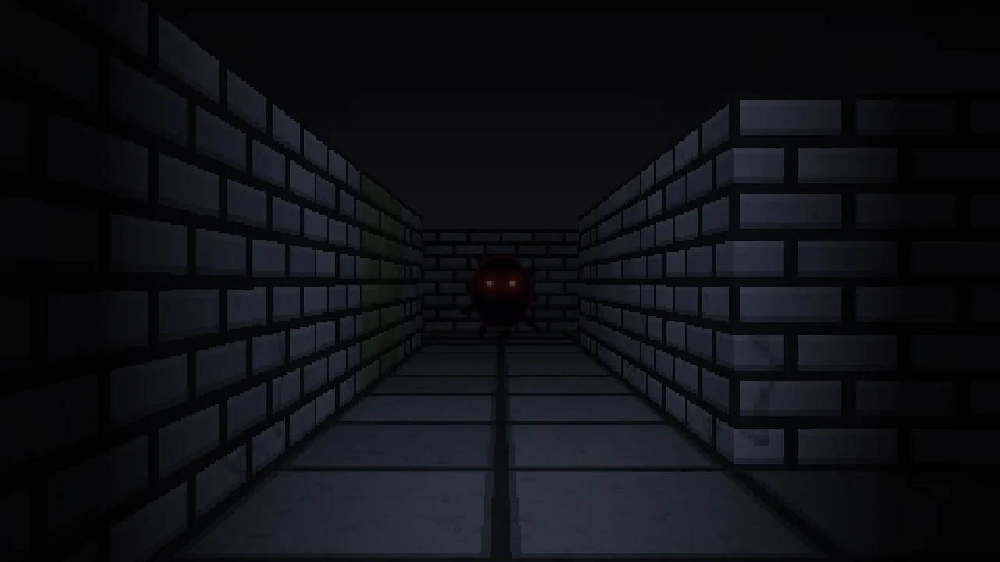
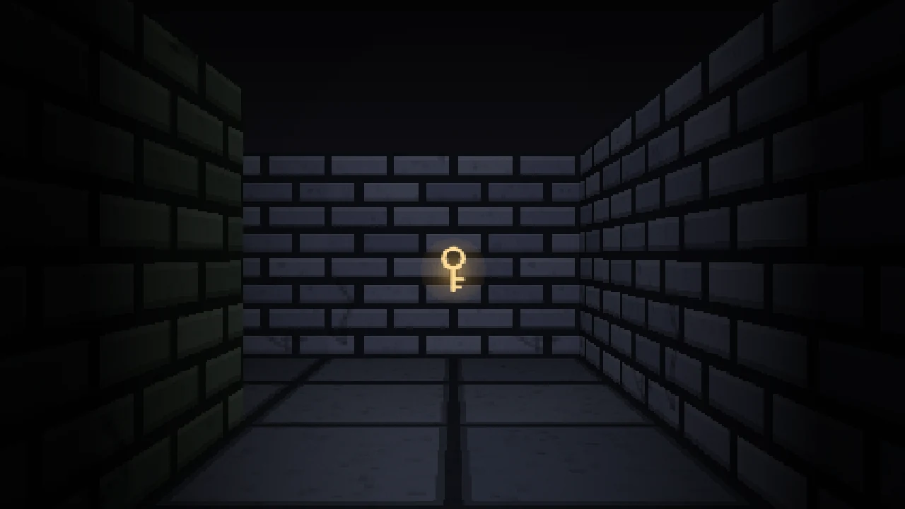
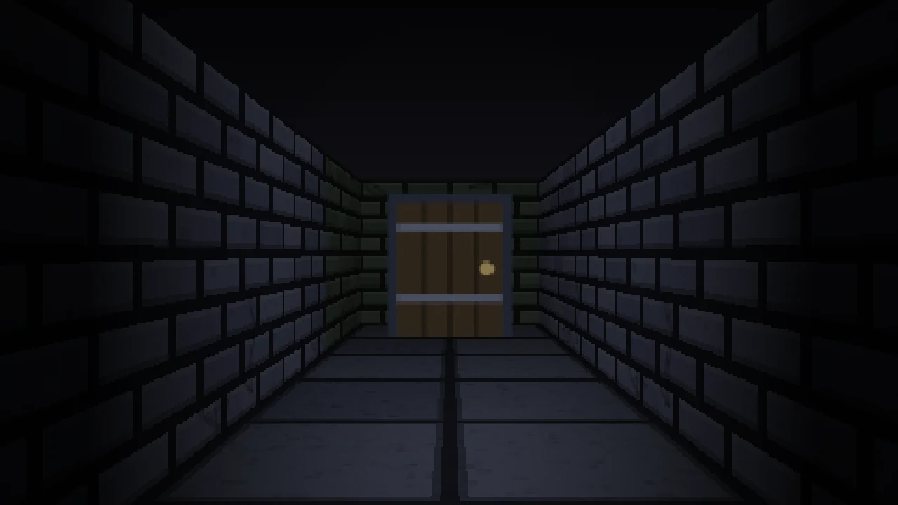
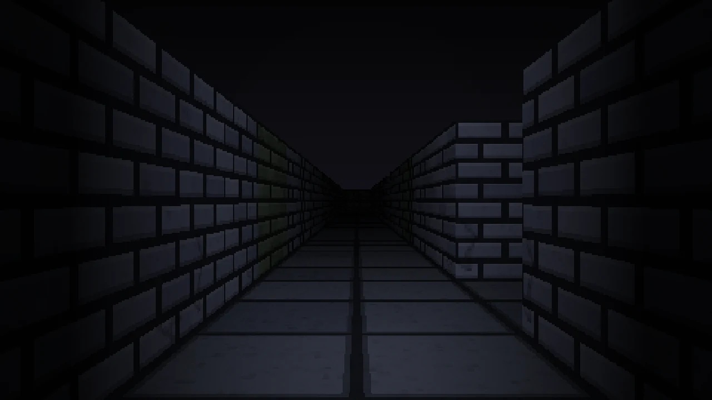

3D
Schattenlabyrinth 3D
Die Ich-Perspektive. Taschenlampe, Ausdauer, ein Monster, das dich jagt. Drei Schwierigkeitsgrade.
Ein Spiel von Nimbus Games
Du wachst in einem dunklen Labyrinth auf.
Deine Taschenlampe zeigt dir einen schmalen Kegel — mehr nicht.
Etwas ist hier unten bei dir. Es hört dich rennen.
Das Spiel
Die Schlüssel liegen immer weit weg vom Start — das rechnet das Spiel beim Erzeugen des Labyrinths aus. Ohne sie bleibt die Tür zu.
Sprinten geht ein paar Sekunden, dann bist du aus der Puste. Und es macht Lärm: Rennen hört es auch durch Wände.
Es nimmt immer den kürzesten Weg zu dir. Verliert es dich, sucht es die Stelle ab, an der es dich zuletzt bemerkt hat.
Bilder
Jede Wand, jeder Lichtkegel und jede Textur wird während des Spielens berechnet. Zum Vergrößern anklicken.




Im Launcher enthalten
Die Ich-Perspektive. Taschenlampe, Ausdauer, ein Monster, das dich jagt. Drei Schwierigkeitsgrade.
Dieselbe Welt von oben. Die Taschenlampe wirft echte Schatten um die Ecken. Der Vorgänger der 3D-Fassung.
| WASD | Bewegen |
| Maus | Umsehen |
| Shift | Rennen – verbraucht Ausdauer |
| M | Karte ein- und ausblenden |
| Esc | Pause |
| Leicht | Kleines Labyrinth, 2 Schlüssel, helle Lampe, langsames Monster |
|---|---|
| Normal | 3 Schlüssel, es lernt dazu |
| Albtraum | Riesig, 4 Schlüssel, schwache Lampe — und es ist schneller als du |
Loslegen
Du bekommst eine ZIP-Datei. Rechtsklick → Alle extrahieren, dann liegt Wolken.exe vor dir. Es wird nichts installiert und nichts in der Registry eingetragen — zum Entfernen löschst du die Datei wieder.
Doppelklick auf Wolken.exe. Beim ersten Mal meldet sich Windows mit „Der Computer wurde durch Windows geschützt“ — auf Weitere Informationen und dann Trotzdem ausführen klicken.
Im Launcher auf Herunterladen. Danach läuft das Spiel auch ohne Internet, und neue Versionen meldet er von selbst.
Damit ein Programm ohne Warnung startet, braucht es ein gekauftes Zertifikat für mehrere hundert Euro im Jahr. Das habe ich als Schüler nicht. Windows kennt die Datei deshalb einfach nicht — das heißt nicht, dass etwas damit nicht stimmt.
Die Meldung kommt nur beim allerersten Start. Wer sie einmal weggeklickt hat, sieht sie nie wieder.
Unter der Haube
Das erste Spiel von Nimbus Games und ein Schulprojekt für Informatik. Keine Spiel-Engine, keine 3D-Bibliothek, keine fertigen Grafiken — nur HTML, CSS und JavaScript.
Recursive Backtracking. Ein Stapel merkt sich den Weg; an einer Sackgasse geht der Algorithmus zurück, bis wieder eine unbesuchte Zelle in Reichweite ist. Zwischen je zwei Punkten gibt es danach genau einen Weg.
Raycasting mit DDA. Für jede der 480 Bildspalten fliegt ein Strahl los. Wie weit er kommt, bestimmt die Höhe der Wand auf dem Bildschirm. Denselben Trick benutzte Wolfenstein 3D 1992.
Breitensuche und ein Zustandsautomat. Es streift umher, jagt dich oder sucht deine letzte bekannte Position ab. Der Weg zu dir ist immer der kürzeste mögliche.
Web Audio API. Keine Sounddateien. Schritte, Knurren und Herzschlag entstehen aus Oszillatoren und Rauschen — der Herzschlag wird schneller, je näher es kommt.
Kostenlos, keine Anmeldung, keine Werbung.